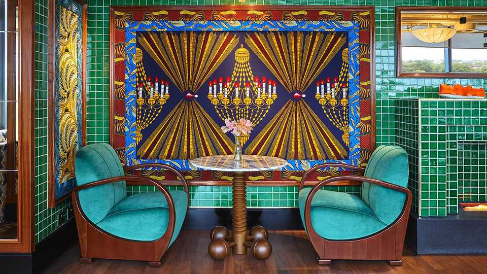

London’s private members’ clubs are proliferating
But building a new community is harder than it looks
July 16th 2026

ON A WARM afternoon at Fulham Pier in west London, the Thames glints in the sun and members of Lighthouse Social, a private club, drift between coffee, meetings and glasses of Aperol spritz on the terrace. The relaxed mood is no accident. Much effort has gone into assembling the right mix of members in the right space. “It’s like whispers of smoke,” says Glen Sutton, the Pier’s director. “You can’t grab what makes a club. But you know when you’re in one that isn’t working.”
London has long been a city of clubs. From the 18th century the grand houses of St James’s offered a home from home for aristocrats and politicians. More recently came the “anti-clubs”: the Groucho, opened in 1985, drew a rowdy creative set; Soho House followed a decade later, aimed at a similar crowd. Both ended up full of bankers. Debauchery was dialled down, but revenue went up.
Now, London clubs are proliferating again, part of a wider trend: a report in 2024 by Knight Frank, a property consultancy, pointed to an acceleration of club openings in Europe and America. Today London has over 130 members’ clubs (excluding those that are primarily gyms or sports clubs), roughly double the number in 1985, according to Seth Thévoz, a historian of clubland. In a city where working and social lives are less tied to offices, clubs offer a place to spend time—and money—throughout the day.
Jamie Caring, a club consultant, says roughly three-quarters of the inquiries he gets about new clubs now include a wellness element. Many are extensions of existing businesses—restaurants, hotels or co-working spaces—with the trappings of a club bolted on. Lighthouse Social forms part of a redevelopment around Fulham Football Club’s Riverside Stand, to generate activity beyond match days.
During the pandemic Londoners spent more time in their local areas and many have stuck with those habits. “People have become much more invested in their neighbourhoods,” says Mr Sutton. His club’s members largely walk in from surrounding streets. Families are welcome, and there is an on-site crèche. The small-scale feel is deliberate: too much growth, he argues, would turn it into “an airline lounge”, devoid of community.
At the other end of the spectrum sits the Pembroke. It is due to open later this year in a former prime ministerial residence overlooking Buckingham Palace Garden, and is an exercise in scale. Backed by the Oman Investment Authority, it will include multiple restaurants, lounges and a late-night bar with a £1m ($1.3m) sound system and a DJ booth carved from Italian marble. A job advert in Country Life for a “butter sommelier” with an “encyclopedic knowledge of toast” was posted partly in jest; the volume of applications helped turn it into a real hire. Membership costs £3,250 a year, or £60,000 for life. The club says it has already sold more than ten life memberships; perks include a “life loo”, exclusive use of one of the 55 lavatories.
The Pembroke sits among embassies and mansions in Belgravia. Yet its director, Will Woodhams, like his counterpart in Fulham, says he is targeting a local crowd. As some of the international wealth that sustained Mayfair’s clubs has ebbed, newer clubs are courting Londoners who stayed put. Many will use the Pembroke as a workspace: Mr Woodhams jokes he will bring a mini martini to members who close their laptops by 4pm.
A third model is the scalable club brand. Several London-born concepts are expanding abroad, not least to New York. One, 67 Pall Mall, a wine-focused club founded in St James’s in 2015, now has three foreign locations and plans for more. Such clubs are not rooted in a single neighbourhood but offer a familiar experience replicated across cities. The template is Soho House, which has around 50 sites worldwide but also saw its 200,000-plus members dismayed by overcrowding and rising fees. Its recent move back into private ownership, after a spell as a public company, was widely read as a reminder of how hard it is to scale exclusivity.
Mr Thévoz says the success of traditional London clubs relied on the ability of members to mix easily with one another. Shared tables and common rooms encouraged “clubbability”. Whereas older clubs filtered by class or profession, newer ones aim for a broader mix. Those hungrier for subscriptions may be less selective still: if you can pay, you’re in. One commentator warns of “ersatz clubs”: places that look like clubs but operate as hospitality businesses. Members, less interested in community, behave more like customers—readier to complain when dissatisfied.
Clubs remain a precarious business. Mr Thévoz estimates that around 90% fail, often within three years. High up-front capital costs can leave operators burdened with debt that modest annual revenues struggle to service. London’s older clubs have advantages here. Many own their buildings. They have also adapted quietly, relaxing dress codes, improving facilities and, in some cases, admitting women.
London has reinvented its clubs before. The coffee houses of the 17th century gave way to the gentlemen’s clubs of Pall Mall; the smoky dining rooms of the post-war era yielded to the creative hangouts of Soho. Today’s boom may have a mix of models, but all borrow the language of community. The history of clubland suggests it is the hardest thing to build.■
For more expert analysis of the biggest stories in Britain, sign up to Blighty, our weekly subscriber-only newsletter.